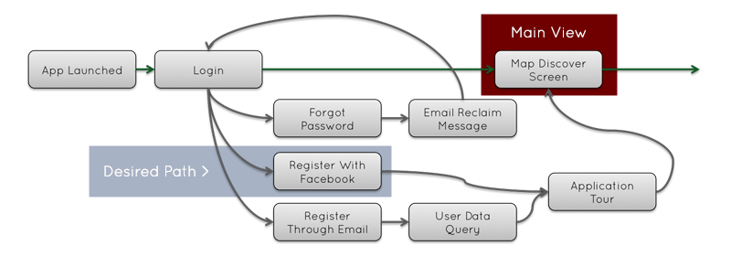
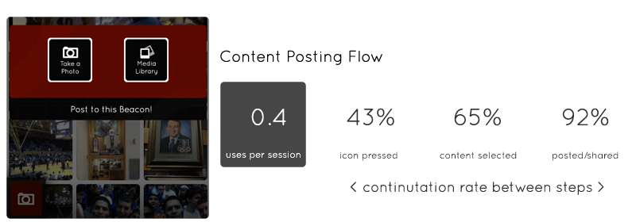

Hey! Jason here. I am a Bay Area designer, front-end developer, and entrepreneur.
I graduated Duke University in May 2011.
I hold a B.S.E. in Electrical and Computer Engineering and Visual Arts.
...yeah, it's an eclectic combo
I specialize in Application Design and Product Management. My other skills include graphic design, concept drafting, front-end coding, (try changing your browser window size!) digital painting, user experience planning, technical writing, and presenting in front of audiences.
Industry Software Proficiency:
My startup Radius launched in January on the
web and
iOS. We are a new location-based platform that allows people to broadcast their favorite locations and virtually visit top areas around the world.
As lead designer, I was responsible for the shaping of the Radius concept, its fledgling corporate branding, its application UI on desktop and mobile, and its marketing materials - in essence, the entire software product lifecycle. Here are some insights into the product and my personal workflow.
Consistent look and feel
Startups need a clear and memorable brand - there are too many competitors in Silicon Valley to pointlessly lose ground by looking generic to a potential investor, or by confusing your intended audience - a too-casual tone for a B2B sales application, for example. A defined aesthetic goes a long way towards establishing a common company design language that smooths the path for identity, marketing, and development.
Radius uses a very stark red motif with rounded elements echoing its logo, a compsition that represents connected regional broadcasts. Such branding is reflected in our released products and all communication.
Logo
Icons
Cards
Pitchdeck
Software
User interaction planning
The end user interface is a direct extension of the project's core concept: it is important that the base use case is low-energy and the first thing presented to end users. (For Radius, that is map-based discovery of nearby interests.) UI flow diagrams, such as the one below, are exceptionally useful in the planning phase as they give a solid product roadmap.

I've found it's very useful to assemble a list of both desired behaviors (ex. sharing content to other networks) and undesired options (ex. deleting a public account) to best plot user trajectory. Design can then look through and adjust friction to taste (ex. allowing one click approval vs requiring a seperate confirmation alert).
Wireframes and specs
Although our agile process relies on tandem design-development, it is often efficient to seperate the two (so developers don't spend time figuring how best something looks while implementing it). These higher-fidelity instruction sets were written to define the mobile and web products.
These documents (see right) were mainly done in powerpoint for ease of use and dispersed to the team for discussion and reference.
Pixel-perfect production
Once the wireframes are approved by the team, the next step is to build deployment-ready assets that can be inserted into the iOS storyboard or web code. This process can be made very painless if each element in the mockup is mathematically planned to be directly translatable to production.
The goal here is to work with the developers to ensure the produced product, even with functionality compromises, looks as close to the intended vision as possible.
Two products, one vision
Simultaneously releasing web and mobile was a tough problem: despite massively differing screen sizes, the two apps needed to have the same functionality / flow to not confuse users, AND still feel natural to their own platform.
My solution was to use a persistent sidebar in both apps while highlighting their natural strengths (content upload on web, local discover on mobile). The products thus had their own specialization but were still cut from the same mold. Having a defined theme and brand so that everything looked in-place was very helpful in this process.
Feedback/analytics driven development loop
Once the product is shipped, it's time to test the hypotheses made regarding market fit and user experience. Are users latching onto the app? Is the base use case immediately clear and executed upon? Does the interface naturally guide people to take desired actions?

We incorporated the Flurry analytics platform into our mobile application. We scrutinized metrics both broad (avg session length) and specific (dropoff rate between broadcast creation steps). This set of data combined with subjective feedback from our beta users served to guide our iterative development process.
Release and beyond
Putting products out to the market is both a very stressful event and a breath of relief. However, design's work is never done, as brand extends into marketing and promotion. Check out this cool little element I created for the webapp, which lets people to text our website to recieve a mobile download link! (functional on
radius-app.com)